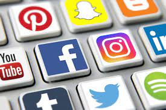

Om sosiale medier
Sosiale medier er forskjellige nettsider og apper som både barn, ungdommer og voksne bruker for å kommunisere med hverandre. Flere unge har begynt å bruke sosiale medier, og mange bekymrer seg for dette.Her er et bilde av noen apper som brukes mye:

Hva er problemet?
Sosiale medier er noe som skaper avhengighet og press spesielt blant unge. Mange bruker flere timer på sosiale medier. Det er fordi at appene lages på en måte som skal få folk til å ville sjekke og bruke dem ofte. Et eksempel er varslinger. De er designet på en måte som gjør at man ikke kan lese eller se hva det er, før man har gått helt innpå appen. Appene Instagram og Snapchat er apper som skaper mye avhengighet og press. Når en varsling fra disse appene sendes, kan man ikke se innholdet før man har gått helt innpå appen.
Dette er et eksempel på hvordan snapchat varslinger vises på skjermen.

Dette er et eksempel på noen Instagram-varslinger som gjør at man får lyst til å sjekke appen.
Instagram
På Instagram kan man dele bilder og opplevelser med familie, venner og bekjente. Hvis en venn tagger en annen i sitt bilde, kommer det opp som en varsling hos den som har blitt tagget. Akkurat som vist på bildet over. Når man får varslingen, har man selvfølgelig lyst til å se hvilket bilde man har blitt tagget i. På denne måten har Instagram fått oss til å gå innpå appen sin. Når man da er innpå appen, kommer det kanskje opp annonser, venneforslag eller spennende innlegg som er relevante for oss individuelt. Da ender man kanskje opp med å bli værende på appen mye lenger.
Appen har også en del funksjoner for å gjøre oss avhengig og være innpå appen så mye som mulig. Følgere, likes og kommentarer er funkjsoner som skaper mye press. Når man oppretter en instagram-konto, ønsker man at så mange personer som mulig skal følge profilen sin. Hvis man publiserer et innlegg, kan andre både like og kommentere på det. Man kan også bruke tagger for å få flest mulige til å se innlegget sitt. Hvis andre da ser en konto med innlegg de synes er fine eller interessante, kan de følge kontoen. Dagens sammfunn og press har gjort slik at unge ønsker å ha flest mulig følgere, likes og positive kommentarer. En tanke som mange unge har er: "jo flere likes, kommentarer og følgere man har, jo mer blir man likt". På Instagram kan man følge personer fra hele verden. Kroppspress og klespress er det største tilfellet blant ungdommer. Kjendiser fra USA spesielt, har ofte mange følgere på Instagram, har mange fine klær og "perfekt" kropp på innleggene sine. Når unge da føler kontoene til kjendisene, tenker de at de må ha "perfekt" kropp og mange fine klær for å få mange følgere, likes og kommentarer. I forskjellige miljøer rundt ungdommmer er det alltid noen som får mer oppmerksomhet enn andre på Instagram. Ungdommer ser kanskje kontoen til de som får mye oppmerksomhet, og vil kopiere em for å også få mye oppmerksomhet.
Undersøkelser har vist at flere og flere ungdommer har tatt livet sitt og har lav selvtillit på grunn av sosiale medier. Hvis ikke likes, kommentarer og følgere hadde fantes, hadde det ikke vært noen måte som fremstiller noen som mer "populær" enn andre.
Nettsiden "Sykepleien", støtter det jeg har reflektert rundt i avsnittet over. Der argumenteres det for hvorfor sosiale medier ikke er bra for den psykiske helsen til ungdommer. Nettsiden sier noe om at jenters psykiske helse blir mye mer påvirket av angst, depresjon og dårlig selvbilde enn det gjør med gutter. Mens gutter blir mye mer påvirket av aggressive reaksjoner og atfersvansker. De største konsekvensene for bruk av sosiale medier er som sagt lite søvn. Det skyldes ikke bare det at man bruker sosiale medier, men at man er redd for å gå glipp av noe i løpet av natten. Dette er igjen noe som skaper en avhengighet. Presset bygger også på at man trenger å være oppdatert og tilgjengelig for å opprettholde statusen sin. Kroppspresset er størst blant jenter, og dette kommer av at man følger med på andre på sosiale medier. (Sykepleien.no 2019).
Algoritme brukes også til sosiale medier og nettsøk. Det brukes for å styre resultater av nettsøk ved hjelp av google og andre søkemotorer. Visninger i Facebook og andre sosiale medier er også styrt av algoritmer. Målet til algoritmene er å hente resultater basert på det man har søkt på før, for å gjøre søkeresultatene relevante og interessante for oss. (Hovde, K & Grønmo 2020). For eksempel hvis man har søkt på «Nike sko» på nettet for å kjøpe nye sko, kommer det kanskje annonser i andre apper om andre produkter med Nike merket. Algoritmene har da styrt søkeresultatene basert på at man har søkt opp et produkt som inneholder merket Nike før, og antar ar man kanskje liker dette merket. Et eksempel som allerede er nevnt, er Snapchat. Snapchat har algoritmer som gjør at annonser som er relevante for oss individuelt, kommer opp på skjermen for at de skal få solgt produktene sine mest mulig. Algoritmer er et godt triks til å få solgt annonsene sine. Hvis man bare hadde gitt for eksempel reklame om fotballutstyr til en som ikke bryr seg noe om fotball, ville ikke de fått noe ut av annonsene sine.
På denne måten styrer kunstig intelligens våres hverdag, skaper avhengighet og press. Noen mener at dette nesten er som magi, og at kunstig intelligens kan bli så avansert at ikke mennesker har kontroll lenger.
Forskning.no argumenterer for at riktig bruk av sosiale medier kan gjøre oss lykkelig. Det snakkes om at sosiale medier kan redusere ensomheten, og styrke det sosiale nettverket. Kommunikasjonen går for det meste via sosiale medier, og at å ha stabile forhold til andre mennesker er nøkkelen til å ha det bra. Så det at man kommuniserer med mennesker som gjør oss godt gjennom sosiale medier, bidrar til å utelukke ensomheten. (Holsten, H 2018). Igjen, dette er et eksempel på noe som er riktig bruk av sosiale medier.
Les mer om mine personlige meninger og råd om sosiale medier på "Personlige råd og meninger".
Snapchat
Snapchat-varslingene kommer opp med navnet på den som sender snap. Mam kan ikke se selve bildet eller innholdet som har blitt sendt. Når man da får varslingen, får man lyst til å sjekke hva som har blitt sendt. Da går man innpå appen, og finner samtidig andre interessante ting. Snapchat har også en del funkjsoner som skaper avhengighet. Det er blant annet noe som heter "streak" og "snapscore". Når man sender bilder frem og tilbake hver dag, får man noe som kalles "streak". Det er et tall som kommer opp ved siden av navnet til personen man snapper med. Dette tallet viser hvor mange dager sammenhengende man har snappet frem og tilbake med denne personen. "snapscore" er et tall på snapchat-profilen som viser hvor mange snapper man har sendt totalt fra man opprettet profilen. Mange konkurrerer om å ha veldig høy snapscore, og ønsker å ha høy snapstreak med vennene sine. Dette innebærer å være på appen så mye som mulig, og i hvert fall hver dag. Når man blar gjennom "snap-stories" (videoer og bilder man deler felles med venner på Snapchat), kommer det reklame innimellom. Snapchat ønsker å ha oss inne på appen så mye så mulig for å selge disse annonsene og reklamene sine. Konsekvensene er at mange mister søvn fordi Snapchat holder dem våken hele natten. Man blir også mye mindre sosial og sitter inne for mye på mobilen. (Thi, T 2017)
Dette er et eksempel på noen Instagram-varslinger som gjør at man får lyst til å sjekke appen.
Appen har også en del funksjoner for å gjøre oss avhengig og være innpå appen så mye som mulig. Følgere, likes og kommentarer er funkjsoner som skaper mye press. Når man oppretter en instagram-konto, ønsker man at så mange personer som mulig skal følge profilen sin. Hvis man publiserer et innlegg, kan andre både like og kommentere på det. Man kan også bruke tagger for å få flest mulige til å se innlegget sitt. Hvis andre da ser en konto med innlegg de synes er fine eller interessante, kan de følge kontoen. Dagens sammfunn og press har gjort slik at unge ønsker å ha flest mulig følgere, likes og positive kommentarer. En tanke som mange unge har er: "jo flere likes, kommentarer og følgere man har, jo mer blir man likt". På Instagram kan man følge personer fra hele verden. Kroppspress og klespress er det største tilfellet blant ungdommer. Kjendiser fra USA spesielt, har ofte mange følgere på Instagram, har mange fine klær og "perfekt" kropp på innleggene sine. Når unge da føler kontoene til kjendisene, tenker de at de må ha "perfekt" kropp og mange fine klær for å få mange følgere, likes og kommentarer. I forskjellige miljøer rundt ungdommmer er det alltid noen som får mer oppmerksomhet enn andre på Instagram. Ungdommer ser kanskje kontoen til de som får mye oppmerksomhet, og vil kopiere em for å også få mye oppmerksomhet.
Undersøkelser har vist at flere og flere ungdommer har tatt livet sitt og har lav selvtillit på grunn av sosiale medier. Hvis ikke likes, kommentarer og følgere hadde fantes, hadde det ikke vært noen måte som fremstiller noen som mer "populær" enn andre.
Nettsiden "Sykepleien", støtter det jeg har reflektert rundt i avsnittet over. Der argumenteres det for hvorfor sosiale medier ikke er bra for den psykiske helsen til ungdommer. Nettsiden sier noe om at jenters psykiske helse blir mye mer påvirket av angst, depresjon og dårlig selvbilde enn det gjør med gutter. Mens gutter blir mye mer påvirket av aggressive reaksjoner og atfersvansker. De største konsekvensene for bruk av sosiale medier er som sagt lite søvn. Det skyldes ikke bare det at man bruker sosiale medier, men at man er redd for å gå glipp av noe i løpet av natten. Dette er igjen noe som skaper en avhengighet. Presset bygger også på at man trenger å være oppdatert og tilgjengelig for å opprettholde statusen sin. Kroppspresset er størst blant jenter, og dette kommer av at man følger med på andre på sosiale medier. (Sykepleien.no 2019).
Hvordan vet appene hva de skal gjøre for å få oss avhengig?
Problemet er at det som er med på å gjøre oss avhengig er kunstig intelligens. Det diskuteres at kunstig intelligens styrer hverdagen våres. Det er nemlig ikke mennesker som sitter og styrer innpå appene, men store avanserte datamaskiner. Dette kalles for kunstig intelligens. Det finnes mange typer kunstig intelligens. Når det gjelder sosiale medier, er begrepene maskinlæring og algoritme mest relevante. Dette er datamaskiner som bruker informasjonen og søkehistorikken vår for å manipulere oss. Instagram og Facebook er apper som bruker maskinlæring. Når man blir venn med noen på Facebook eller begynner å følge noen på Instagram, kommer det opp forlag til å følge eller legge til personer man kanskje kjenner. Dette gjøres da av maskinlæring, som filtrerer og bruker informasjon basert på hva brukeren følger, er interessert i og hvilke nettsted og kontoer den beveger seg inn på. Anbefalingsmotoren lærer av aktiviteten til brukeren, og finner mønstre i store datamengder for å komme opp med forslag til interessante kontoer og innlegg for brukeren. Derfor kalles det for maskinlæring. Maskinen «lærer» i stedet for å bli programmert. (Humans For AI 2019).Algoritme brukes også til sosiale medier og nettsøk. Det brukes for å styre resultater av nettsøk ved hjelp av google og andre søkemotorer. Visninger i Facebook og andre sosiale medier er også styrt av algoritmer. Målet til algoritmene er å hente resultater basert på det man har søkt på før, for å gjøre søkeresultatene relevante og interessante for oss. (Hovde, K & Grønmo 2020). For eksempel hvis man har søkt på «Nike sko» på nettet for å kjøpe nye sko, kommer det kanskje annonser i andre apper om andre produkter med Nike merket. Algoritmene har da styrt søkeresultatene basert på at man har søkt opp et produkt som inneholder merket Nike før, og antar ar man kanskje liker dette merket. Et eksempel som allerede er nevnt, er Snapchat. Snapchat har algoritmer som gjør at annonser som er relevante for oss individuelt, kommer opp på skjermen for at de skal få solgt produktene sine mest mulig. Algoritmer er et godt triks til å få solgt annonsene sine. Hvis man bare hadde gitt for eksempel reklame om fotballutstyr til en som ikke bryr seg noe om fotball, ville ikke de fått noe ut av annonsene sine.
På denne måten styrer kunstig intelligens våres hverdag, skaper avhengighet og press. Noen mener at dette nesten er som magi, og at kunstig intelligens kan bli så avansert at ikke mennesker har kontroll lenger.
Hva er positivt?
Det som er positivt med sosiale medier er at man kan holde kontakten og følge med på livet til de man ikke ha muligheten til å se så ofte man vil i hverdagen. Dette gjelder både familie og venner. Det maskinlæring og algoritmene gjør kan også være positivt. Hvis man har gode venner som man har mistet kontakten med, kan man da få muligheten til å gjennopprette kontakt igjen ved hjelp av Facebook sine venneforslag. Snapchat er en rask måte å dele øyeblikk, bilder og videoer på. Hvis man for eksempel har venner som bor i utlandet, er det mye billigere å bruke Snapchat til å holde kontakten enn teksmeldinger via telefonnummer. Et eksempel var at mande var ensome under korona-pandemien, men at sosiale medier reddet dem.Forskning.no argumenterer for at riktig bruk av sosiale medier kan gjøre oss lykkelig. Det snakkes om at sosiale medier kan redusere ensomheten, og styrke det sosiale nettverket. Kommunikasjonen går for det meste via sosiale medier, og at å ha stabile forhold til andre mennesker er nøkkelen til å ha det bra. Så det at man kommuniserer med mennesker som gjør oss godt gjennom sosiale medier, bidrar til å utelukke ensomheten. (Holsten, H 2018). Igjen, dette er et eksempel på noe som er riktig bruk av sosiale medier.
Les mer om mine personlige meninger og råd om sosiale medier på "Personlige råd og meninger".